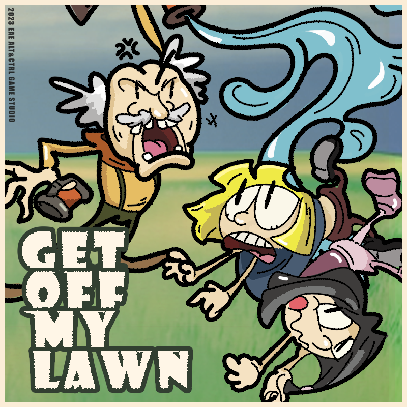
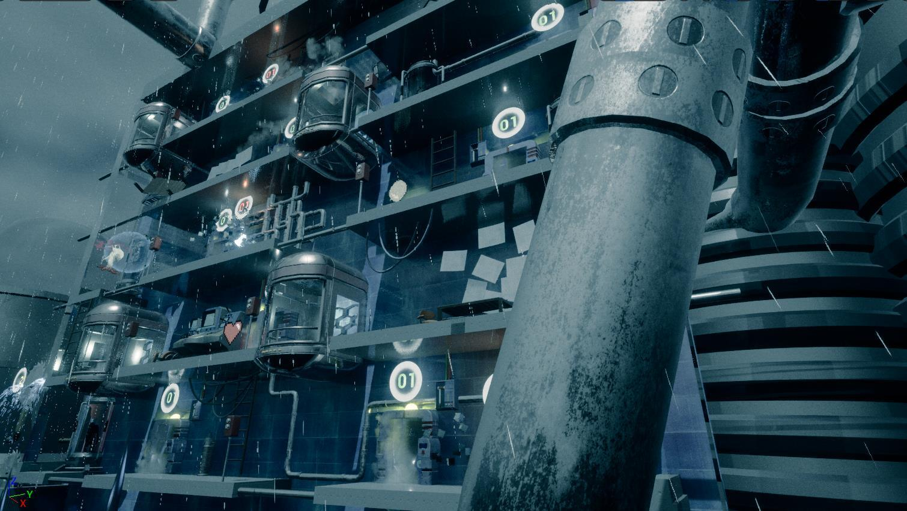
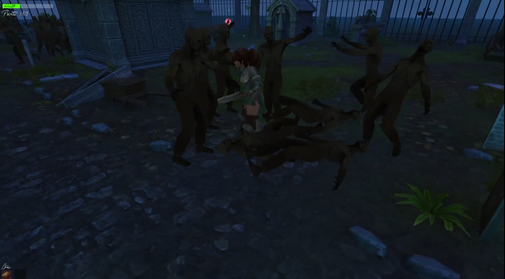

-

Heart of Hampstead (2022)
A third-person adventure game where the player finds clues to a mysterious item and decides what they beleive it is. Worked On: Game Design, Game Narrative, Game Programming
Repository -

Get Off My Lawn (2023)
Protect your lawn by spraying intruders with your hose, send your dog to get the toys off of your lawn, keep yourself rocking in your chair to stay awake, and keep drinking your beverage to keep your energy up. This project is using an alt-controller made of a rocking chair and other elements to play the game. Nominated for IndieCade 2023 Live Action Award! Also asked to be a part of IndieCade 2023 Night Games! Worked On: Game Design, Game Audio
-

Release (2022)
A VR game designed to help people process anger. Walk through a destruction room and smash items with your bat, then calm down with some music therepy by playing your own meladies. Worked On: Game Design, Game Programming
Repository
-

Escape Area 51 (2022)
An iteration from the arcade game, Moon Patrol. Play as an alien escaping Earth and destroy everyone blocking your path. Worked On: Game Design, Game Programming
Repository -

Elevator Survival (2022)
Based on the arcade game Elevator Action. The player defeates as many enemies as they can while Twitch users set off different Traps and enemies through Twitch Integration. Survive as long as possible, and destroy as many enemies as you can. Worked On: Game Design, Game Programming
Repository -

Guerriere (2020)
A third-person wave, fighting game. Use a sword and spell to fight waves of zombies and monsters, use health potions to heal up, and defeat both levels. The second game I ever made, and was worked on solo. Worked On: Game Design, Game Programming
Repository